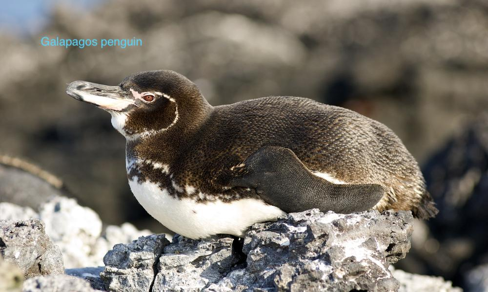
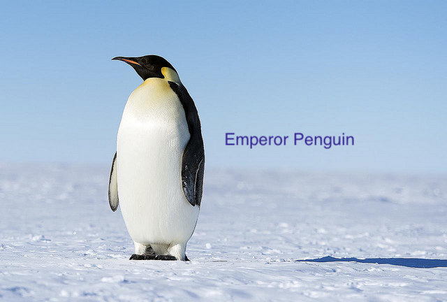
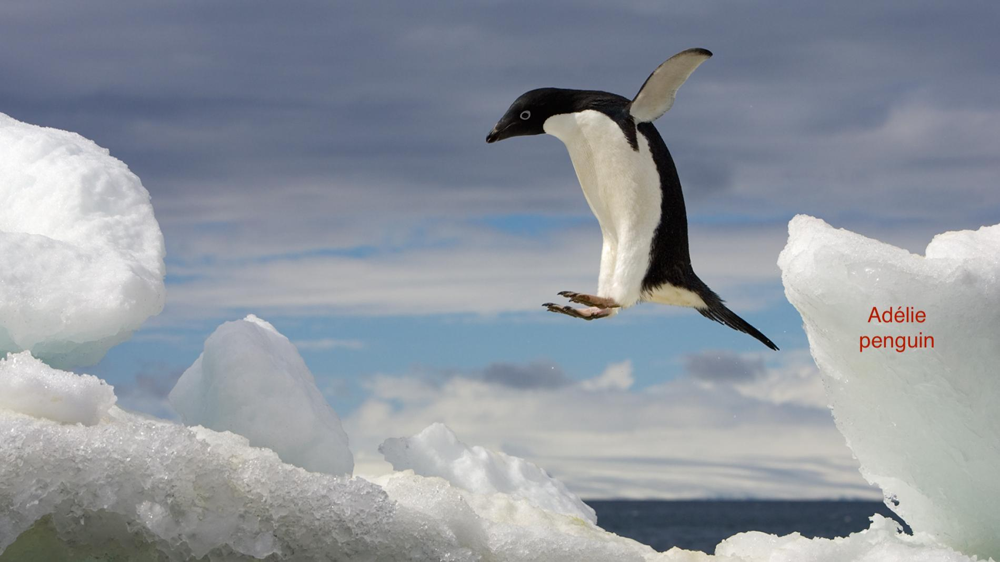
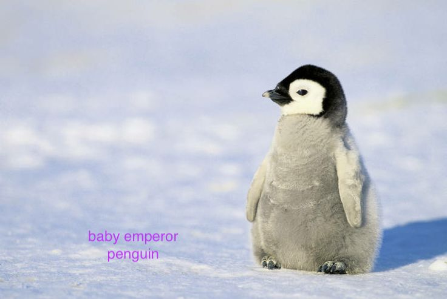

There are many penguins that can be found all around the globe even in South Africa and the Galapagos islands. In the world, there are 17 known species of penguins. The emperor, Adelie, Rockhopper, Chinstrap, Gentoo, King, and the macaroni penguin all live in Antarctica. These are some of the species of penguins:



Most penguins mate with each other only during the mating season. Typically, a penguin is ready to mate at around three to eight years. After the penguins(emperor) mate, they will lay one egg. Did you know that emperor penguins are the only type of penguin to lay one egg? All other penguins lay two eggs. Usually, the male and female will take turns keeping the egg warm, but for the emperor penguin it is different. The female will give the egg to the male to keep warm while she goes to hunt for a few weeks.
When the penguins hatch, they use their beak to get out of the shell. This can take up to three days. Parents feed their baby by regurgitating food. To find their chick, parents listen to the the unique calls the chick makes.

The Northern Rockhopper, Erect-crested, Yellow-eyed, Jackass, and Galapagos penguins are all endangered according to the Red List of Threatened Species. Although these penguins are endangered, most of the other species of penguins are threatened or vulnerable.
-Did you know that world penguin day is April 25?
-Penguins can't fly, but they are really good swimmers.
-A large group of penguins is called a Rookery